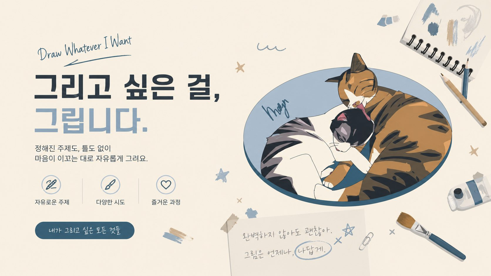

Site map
전체 구조도
Portfolio
About
자유로운 시도와 즐거운 과정을 담은 페이지
이 포트폴리오는 일러스트 작업의 분위기와 진행 과정을 깔끔하게 보여주기 위해 제작했습니다. 메인 페이지에서는 전체 콘셉트와 대표 이미지를 먼저 보여주고, 프로젝트 페이지에서는 작업 이미지를 한 장씩 넘기며 볼 수 있도록 구성했습니다.
Featured Project
진행 프로젝트 모아보기
함께 보고 싶은 작업이 있다면
프로젝트 페이지에서 전체 이미지 흐름을 확인할 수 있습니다.
Project page